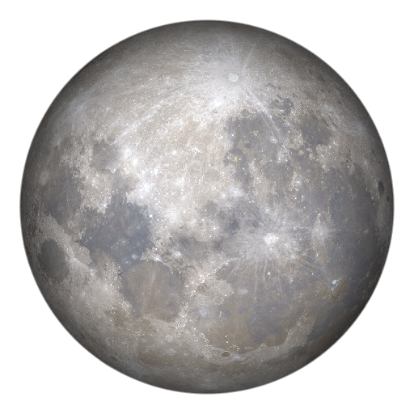

Maramataka
Follow lunar nights, phase changes, illumination, moonrise, moonset, and observation notes.

Observe, learn, grow
A moon-aware companion for maramataka, tides, weather, journaling, and personal rhythm observation.
What Okoro Helps With
Follow lunar nights, phase changes, illumination, moonrise, moonset, and observation notes.
View tide timing, local station context, weather, wind, and environmental cues together.
Journal mood, symptoms, cycle notes, pregnancy, menopause, photos, and personal observations.
Customise lunar nights, icons, home widgets, language, and the way your tradition is represented.
Designed Around Observation
Okoro keeps moon, tide, weather, and personal notes close together so patterns can be noticed over time. Health-related insights are personal observations only and are not medical advice.
Help and Policies